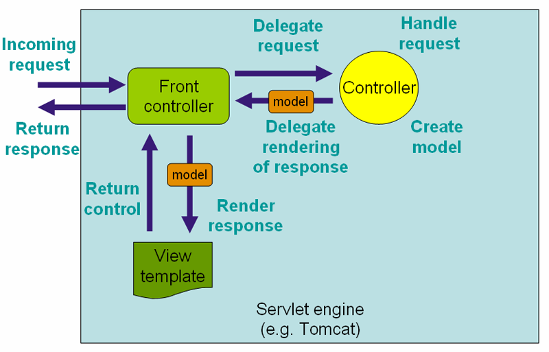
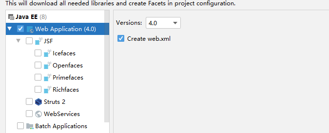
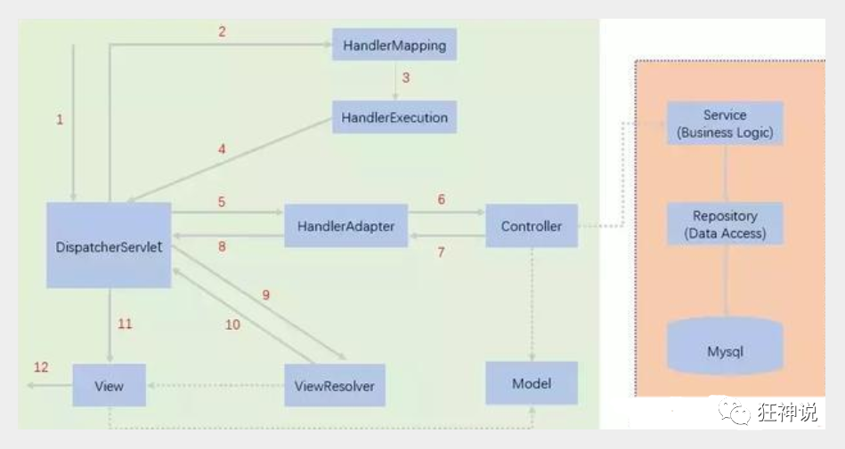
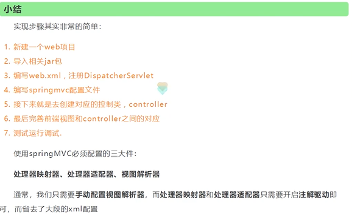
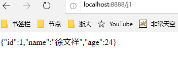
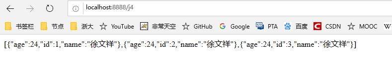

SpringMVC¶
什么是SpirngMVC？¶
简单定义¶
-
Spring MVC是SpringFrameWork的一部分，是基于Java实现的MVC的轻量级web框架。
-
基于Servlet API构建的原始Web框架，从一开始就已包含在Spring框架中
- 围绕一个中心的DispatcherServlet设计的，它将请求发送给处理程序，具有可配置的处理程序映射、视图解析、区域设置、时区和主题解析以及对上载文件的支持。
- 默认处理程序基于@Controller和@RequestMapping注解
- 将请求发送给控制器，并提供其他有助于web应用程序开发的功能。然而，Spring的DispatcherServlet所做的不仅仅是这些。它与Spring IoC容器完全集成，因此允许您使用Spring的所有其他特性。
通过策略接口，Spring 框架是高度可配置的，而且包含多种视图技术，例如 JavaServer Pages（JSP）技术、Velocity、Tiles、iText和POI。Spring MVC 框架并不知道使用的视图，所以不会强迫开发者只使用 JSP 技术。Spring MVC 分离了控制器、模型对象、过滤器以及处理程序对象的角色，这种分离让它们更容易进行定制。
——百度百科
官方文档：https://docs.spring.io/spring/docs/4.3.27.RELEASE/spring-framework-reference/htmlsingle/#spring-web（打开快）
最新版文档（截止20200618）：https://docs.spring.io/spring/docs/5.2.7.RELEASE/spring-framework-reference/web.html#spring-web
为什么要学SpringMVC?¶
- 轻量级，简单易学
- 高效，基于请求响应的MVC框架
- 无缝结合Spring
- 约定大于配置
- 功能强大：RESTful、数据验证、格式化、本地化、主题
- 简单灵活
SpringWebMVC中Dispatcherservlet的请求处理工作流¶

Servlet¶
HelloSpringMVC¶
1、新建一个模块，添加web支持
放在项目上，右键增加模块

2、确定导入了SpringMVC的依赖
3、配置web.xml，注册DispatchServlet
tomcat7 web.xml头文件（版本号是3.0，tomcat 9版本号是4.0，tomcat 8版本号是3.1）
<?xml version="1.0" encoding="UTF-8"?>
<web-app xmlns="http://java.sun.com/xml/ns/javaee"
xmlns:xsi="http://www.w3.org/2001/XMLSchema-instance"
xsi:schemaLocation="http://java.sun.com/xml/ns/javaee
http://java.sun.com/xml/ns/javaee/web-app_3_0.xsd"
version="3.0">
</web-app>
4、编写SpringMVC配置文件。名称：springmvc-servlet.xml：【servletname】-servlet.xml（官方规定的命名方式）
- 官方头如下：
<?xml version="1.0" encoding="UTF-8"?>
<beans xmlns="http://www.springframework.org/schema/beans"
xmlns:xsi="http://www.w3.org/2001/XMLSchema-instance"
xsi:schemaLocation="http://www.springframework.org/schema/beans
http://www.springframework.org/schema/beans/spring-beans.xsd">
</beans>
5、添加处理映射器
<bean class="org.springframework.web.servlet.handler.BeanNameUrlHandlerMapping"/>
6、添加处理适配器
<bean class="org.springframework.web.servlet.mvc.SimpleControllerHandlerAdapter"/>
7、添加视图解析器
<!--视图解析器-->
<bean class="org.springframework.web.servlet.view.InternalResourceViewResolver" id="internalResourceViewResolver">
<!--前缀-->
<property name="prefix" value="/WEB-INF/jsp/"/>
<!--后缀-->
<property name="suffix" value=".jsp"/>
</bean>
8、编写业务操作controller，要么实现Controller接口，要么增加注解；需要返回一个ModleAndView，装数据，封视图
package com.tcmyxc.controller;
import org.springframework.web.servlet.ModelAndView;
import org.springframework.web.servlet.mvc.Controller;
import javax.servlet.http.HttpServletRequest;
import javax.servlet.http.HttpServletResponse;
public class HelloController implements Controller {
@Override
public ModelAndView handleRequest(HttpServletRequest httpServletRequest, HttpServletResponse httpServletResponse) throws Exception {
// 模型和视图
ModelAndView modelAndView = new ModelAndView();
// 封装对象，放在 ModelAndView中
modelAndView.addObject("msg", "HelloSpringMVC");
// 封装要跳转的视图
modelAndView.setViewName("hello");
return modelAndView;
}
}
9、将自己的类交给SpingIOC容器，注册bean
<!--handler-->
<bean id="/hello" class="com.tcmyxc.controller.HelloController"/>
10、写需要跳转的JSP页面，显示数据
<%@ page contentType="text/html;charset=UTF-8" language="java" %>
<html>
<head>
<title>Title</title>
</head>
<body>
<h1>${msg}</h1>
</body>
</html>
11、配置tomcat，测试
可能出现的问题：访问404，排查步骤：
-
查看控制台输出是不是少了什么jar包
-
如果不缺jar包，在IEDA的项目发布中，添加lib依赖

- 重启tomcat
简要分析执行流程¶

- DispatcherServlet表示前置控制器，是整个SpringMVC的控制中心。用户发出请求，DispatcherServlet接收请求并拦截

小结¶

1、新建一个WEB项目
2、导入相关的jar包
3、编写web.xml，注册DispatcherServlet
4、编写springmvc配置文件
5、创建控制类，controller
6、完善前端视图和controller之间的对应
7、测试
controller¶
springmvc-servlet.xml一般配置：¶
<?xml version="1.0" encoding="UTF-8"?>
<beans xmlns="http://www.springframework.org/schema/beans"
xmlns:xsi="http://www.w3.org/2001/XMLSchema-instance"
xmlns:context="http://www.springframework.org/schema/context"
xmlns:mvc="http://www.springframework.org/schema/mvc"
xsi:schemaLocation="http://www.springframework.org/schema/beans
http://www.springframework.org/schema/beans/spring-beans.xsd
http://www.springframework.org/schema/context
https://www.springframework.org/schema/context/spring-context.xsd
http://www.springframework.org/schema/mvc
https://www.springframework.org/schema/mvc/spring-mvc.xsd">
<!--自动扫描包，让包下的注解生效，有IOC容器统一管理-->
<context:component-scan base-package="com.tcmyxc.controller"/>
<!--让springMVC不处理静态资源-->
<mvc:default-servlet-handler/>
<!--支持MVC注解驱动-->
<mvc:annotation-driven/>
<!--视图解析器-->
<bean class="org.springframework.web.servlet.view.InternalResourceViewResolver" id="internalResourceViewResolver">
<!--前缀-->
<property name="prefix" value="/WEB-INF/jsp/"/>
<!--后缀-->
<property name="suffix" value=".jsp"/>
</bean>
</beans>
实现Controller接口¶
- 不推荐使用，太麻烦，而且一个controller对应一个bean，太浪费
使用注解开发¶
RESTful风格¶
RESTFUL特点包括：
1、每一个URI代表1种资源；
2、客户端使用GET、POST、PUT、DELETE4个表示操作方式的动词对服务端资源进行操作：GET用来获取资源，POST用来新建资源（也可以用于更新资源），PUT用来更新资源，DELETE用来删除资源；
3、通过操作资源的表现形式来操作资源；
4、资源的表现形式是XML或者HTML；
5、客户端与服务端之间的交互在请求之间是无状态的，从客户端到服务端的每个请求都必须包含理解请求所必需的信息。
可以达到URL复用的功能
一般的形式：
// http://localhost:8888/springmvc_04_controller_war_exploded/add?a=1&b=2
@RequestMapping("/add")
public String test(int a, int b, Model model){
int res = a + b;
model.addAttribute("msg", "结果是：" + res);
return "test";
}
RESTful形式：
// RESTful风格
// http://localhost:8888/springmvc_04_controller_war_exploded/add2/a/b
// 比如：http://localhost:8888/springmvc_04_controller_war_exploded/add2/3/5
// @RequestMapping(value="/add2/{a}/{b}", method = RequestMethod.GET),这个可以用下面代替
@GetMapping("/add2/{a}/{b}")
public String test2(@PathVariable int a, @PathVariable int b, Model model){
int res = a + b;
model.addAttribute("msg", "结果是：" + res);
return "test";
}
@RequestMapping的几种简单形式：@GetMapping，@PostMapping，@PutMapping，@DeleteMapping
SpringMVC接收数据¶
前端后端参数名一样的情况¶
// http://localhost:8888/springmvc_04_controller_war_exploded/user/t1?name=xwx
// 前端和后端参数名完全一样的情况：不用管了，直接可以拿到数据
@RequestMapping("/t1")
public String text(String name, Model model){
// 1、接收前端参数
System.out.println("前端参数为：" + name);
// 2、将结果返回前端
model.addAttribute("msg", name);
// 3、跳转视图
return "test";
}
前后端参数名不一样¶
- 加注解（如果错了会给错误信息）
@RequestMapping("/t2")
public String test2(@RequestParam("name") String userName, Model model){
// 1、接收前端参数
System.out.println("前端参数为：" + userName);
// 2、将结果返回前端
model.addAttribute("msg", userName);
// 3、跳转视图
return "test";
}
【中文乱码问题】
在web.xml配置一下就好
<!--解决中文乱码问题-->
<filter>
<filter-name>encoding</filter-name>
<filter-class>org.springframework.web.filter.CharacterEncodingFilter</filter-class>
<init-param>
<param-name>encoding</param-name>
<param-value>utf-8</param-value>
</init-param>
</filter>
<filter-mapping>
<filter-name>encoding</filter-name>
<url-pattern>/</url-pattern>
</filter-mapping>
如果还不行，把tomcat的server.xml文件修改一下：
<Connector port="8888" protocol="HTTP/1.1"
connectionTimeout="20000"
redirectPort="8443"
URIEncoding="UTF-8" />
但是，这种方式只对get方式提交有效，如果是post方式提交，你会发现，还是乱码！！！
终极解决方法：
自定义过滤器
package com.tcmyxc.controller;
import java.util.Map;
import javax.servlet.*;
import javax.servlet.http.HttpServletRequest;
import javax.servlet.http.HttpServletRequestWrapper;
import javax.servlet.http.HttpServletResponse;
import java.io.IOException;
import java.io.UnsupportedEncodingException;
/**
* 解决get和post请求 全部乱码的过滤器
*/
public class GenericEncodingFilter implements Filter {
@Override
public void destroy() {
}
@Override
public void doFilter(ServletRequest request, ServletResponse response, FilterChain chain) throws IOException, ServletException {
//处理response的字符编码
HttpServletResponse myResponse=(HttpServletResponse) response;
myResponse.setContentType("text/html;charset=UTF-8");
// 转型为与协议相关对象
HttpServletRequest httpServletRequest = (HttpServletRequest) request;
// 对request包装增强
HttpServletRequest myrequest = new MyRequest(httpServletRequest);
chain.doFilter(myrequest, response);
}
@Override
public void init(FilterConfig filterConfig) throws ServletException {
}
}
//自定义request对象，HttpServletRequest的包装类
class MyRequest extends HttpServletRequestWrapper {
private HttpServletRequest request;
//是否编码的标记
private boolean hasEncode;
//定义一个可以传入HttpServletRequest对象的构造函数，以便对其进行装饰
public MyRequest(HttpServletRequest request) {
super(request);// super必须写
this.request = request;
}
// 对需要增强方法 进行覆盖
@Override
public Map getParameterMap() {
// 先获得请求方式
String method = request.getMethod();
if (method.equalsIgnoreCase("post")) {
// post请求
try {
// 处理post乱码
request.setCharacterEncoding("utf-8");
return request.getParameterMap();
} catch (UnsupportedEncodingException e) {
e.printStackTrace();
}
} else if (method.equalsIgnoreCase("get")) {
// get请求
Map<String, String[]> parameterMap = request.getParameterMap();
if (!hasEncode) { // 确保get手动编码逻辑只运行一次
for (String parameterName : parameterMap.keySet()) {
String[] values = parameterMap.get(parameterName);
if (values != null) {
for (int i = 0; i < values.length; i++) {
try {
// 处理get乱码
values[i] = new String(values[i]
.getBytes("ISO-8859-1"), "utf-8");
} catch (UnsupportedEncodingException e) {
e.printStackTrace();
}
}
}
}
hasEncode = true;
}
return parameterMap;
}
return super.getParameterMap();
}
//取一个值
@Override
public String getParameter(String name) {
Map<String, String[]> parameterMap = getParameterMap();
String[] values = parameterMap.get(name);
if (values == null) {
return null;
}
return values[0]; // 取回参数的第一个值
}
//取所有值
@Override
public String[] getParameterValues(String name) {
Map<String, String[]> parameterMap = getParameterMap();
String[] values = parameterMap.get(name);
return values;
}
}
在web.xml文件中配置过滤器
<filter>
<filter-name>encoding</filter-name>
<filter-class>com.tcmyxc.controller.GenericEncodingFilter</filter-class>
<init-param>
<param-name>encoding</param-name>
<param-value>utf-8</param-value>
</init-param>
</filter>
<filter-mapping>
<filter-name>encoding</filter-name>
<!--
下面是 /* 代表处理所有的请求，
/ 代表处理部分请求
/* 才是真正意义上的过滤所有请求
/ 过滤除jsp页面之外的请求，也就是不对jsp页面的代码进行处理
-->
<url-pattern>/*</url-pattern>
</filter-mapping>
前端接收的是一个对象¶
// 前端传的是一个对象，会匹配user对象中的字段名，否则就匹配不到，该字段为null，前端给的顺序是无所谓的
/*
* 输入示例：http://localhost:8888/springmvc_04_controller_war_exploded/user/t3?id=1&age=90&name=user
* 输出：前端参数为：User{id=1, name='user', age=90}
*
* 输入：http://localhost:8888/springmvc_04_controller_war_exploded/user/t3?id=1&age=90&username=user
* 输出：前端参数为：User{id=1, name='null', age=90}
* */
@GetMapping("/t3")
public String test3(User user){
System.out.println("前端参数为：" + user);
return "test";
}
前后端分离¶
后端部署后端，提供接口
前端独立部署，负责渲染页面
后端返回json数据¶
- Jackson，阿里的fastjson等
Jackson¶
1、导入依赖
<!-- https://mvnrepository.com/artifact/com.fasterxml.jackson.core/jackson-databind -->
<dependency>
<groupId>com.fasterxml.jackson.core</groupId>
<artifactId>jackson-databind</artifactId>
<version>2.11.0</version>
</dependency>
2、测试
@Controller
public class UserController {
@RequestMapping("/j1")
@ResponseBody // 加了这个注解，就不会走视图解析器，会直接返回一个字符串
public String json1() throws JsonProcessingException {
// 创建一个对象
User user = new User(1, "徐文祥", 24);
// jackson ObjectMapper
ObjectMapper mapper = new ObjectMapper();
String str = mapper.writeValueAsString(user);
return str;
}
}
测试截图：

【如果出现中文乱码】
1、原始思路
@RequestMapping(path = "/j1", produces = "application/json;charset=utf-8")

2、SpringMVC的做法
在spingmvc-servlet.xml配置文件中添加Jackson的有关配置：
<!--JSON乱码问题-->
<mvc:annotation-driven>
<mvc:message-converters register-defaults="true">
<bean class="org.springframework.http.converter.StringHttpMessageConverter">
<constructor-arg value="UTF-8"/>
</bean>
<bean class="org.springframework.http.converter.json.MappingJackson2HttpMessageConverter">
<property name="objectMapper">
<bean class="org.springframework.http.converter.json.Jackson2ObjectMapperFactoryBean">
<property name="failOnEmptyBeans" value="false"/>
</bean>
</property>
</bean>
</mvc:message-converters>
</mvc:annotation-driven>

一些技巧：
-
@RestController注解如果加在类上，那么这个类返回的结果全部是字符串 -
@RestController等于@Controller加@ResponseBody，两者不能同时用
显示时间¶
原始方式——自定义时间格式¶
@RequestMapping(path = "/j3")
public String json3() throws JsonProcessingException {
// jackson ObjectMapper
ObjectMapper mapper = new ObjectMapper();
Date date = new Date();
// 自定义时间格式
SimpleDateFormat sdf = new SimpleDateFormat("yyyy-MM-dd HH:mm:ss");
// 返回的是时间戳：Timestamp
String str = mapper.writeValueAsString(sdf.format(date));
return str;
}

Jackson方式¶
@RequestMapping(path = "/j3")
public String json3() throws JsonProcessingException {
// jackson ObjectMapper
ObjectMapper mapper = new ObjectMapper();
//不使用时间戳的格式
mapper.configure(SerializationFeature.WRITE_DATE_KEYS_AS_TIMESTAMPS, false);
Date date = new Date();
// 自定义时间格式
SimpleDateFormat sdf = new SimpleDateFormat("yyyy-MM-dd HH:mm:ss");
mapper.setDateFormat(sdf);
// 返回的是时间戳：Timestamp
// String str = mapper.writeValueAsString(sdf.format(date));
String str = mapper.writeValueAsString(date);
return str;
}
效果相同的
封装工具类¶
package com.tcmyxc.util;
import com.fasterxml.jackson.core.JsonProcessingException;
import com.fasterxml.jackson.databind.ObjectMapper;
import com.fasterxml.jackson.databind.SerializationFeature;
import java.text.SimpleDateFormat;
public class JsonUtil {
// 重载，如果传入的不是一个Date对象，那么设置时间格式对其没有影响，如果是Date对象，那就能起作用
public static String getJson(Object object) throws JsonProcessingException {
return getJson(object, "yyyy-MM-dd HH:mm:ss");
}
public static String getJson(Object object, String dateFormat) throws JsonProcessingException {
ObjectMapper mapper = new ObjectMapper();
mapper.configure(SerializationFeature.WRITE_DATE_KEYS_AS_TIMESTAMPS, false);// 禁用时间戳
SimpleDateFormat sdf = new SimpleDateFormat(dateFormat);// 自定义时间格式
mapper.setDateFormat(sdf);
return mapper.writeValueAsString(object);
}
}
调用：
@RequestMapping(path = "/j2")
public String json2() throws JsonProcessingException {
User user1 = new User(1, "徐文祥", 24);
User user2 = new User(2, "徐文祥", 24);
User user3 = new User(3, "徐文祥", 24);
List<User> userList = new ArrayList<User>();
userList.add(user1);
userList.add(user2);
userList.add(user3);
return JsonUtil.getJson(userList);
}
@RequestMapping(path = "/j3")
public String json3() throws JsonProcessingException {
return JsonUtil.getJson(new Date());
}
了解思想即可，注意方法重载是可以互相调用的。
fastjson¶
- 一个 Java 库，可以将 Java 对象转换为 JSON 格式，也可以将 JSON 字符串转换为 Java 对象。
- toJSONString方法即可将对象转换成 JSON 字符串
- parseObject 方法则反过来将 JSON 字符串转换成对象
<!-- https://mvnrepository.com/artifact/com.alibaba/fastjson -->
<dependency>
<groupId>com.alibaba</groupId>
<artifactId>fastjson</artifactId>
<version>1.2.68</version>
</dependency>
@RequestMapping(path = "/j4")
public String json4() throws JsonProcessingException {
User user1 = new User(1, "徐文祥", 24);
User user2 = new User(2, "徐文祥", 24);
User user3 = new User(3, "徐文祥", 24);
List<User> userList = new ArrayList<User>();
userList.add(user1);
userList.add(user2);
userList.add(user3);
String string = JSON.toJSONString(userList);
return string;
}

公司让用哪个就用那个
SSM整合¶
前期准备¶
数据库¶
CREATE DATABASE ssmbuild;
USE ssmbuild;
CREATE TABLE `books`(
`bookID` INT NOT NULL AUTO_INCREMENT COMMENT '书id',
`bookName` VARCHAR(100) NOT NULL COMMENT '书名',
`bookCounts` INT NOT NULL COMMENT '数量',
`detail` VARCHAR(200) NOT NULL COMMENT '描述',
KEY `bookID`(`bookID`)
)ENGINE=INNODB DEFAULT CHARSET=utf8;
INSERT INTO `books`(`bookID`,`bookName`,`bookCounts`,`detail`)VALUES
(1,'Java',1,'从入门到放弃'),
(2,'MySQL',10,'从删库到跑路'),
(3,'Linux',5,'从进门到进牢');
新建一个maven项目¶
【注意】c3p0连接池警告解决方法：
<bean id="dataSource" class="com.mchange.v2.c3p0.ComboPooledDataSource">
<property name="driverClass" value="${jdbc.driver}"/>
<property name="jdbcUrl" value="${jdbc.url}"/>
<property name="user" value="${jdbc.username}"/>
<property name="password" value="${jdbc.password}"/>
<!--c3p0的私有属性-->
<property name="maxPoolSize" value="30"/>
<property name="minPoolSize" value="10"/>
<!--下面这句话可以显式配置，如果不配置，也会默认帮我们做，
因为c3p0默认是3个，但是我们最小配了10个，所有会覆盖默认配置，
如果不配，会报一个警告：Bad pool size config, start 3 < min 10. Using 10 as start.
其实没啥影响
-->
<property name="initialPoolSize" value="10"/>
<!--关闭连接不自动commit-->
<property name="autoCommitOnClose" value="false"/>
<!--获取连接超时时间-->
<property name="checkoutTimeout" value="10000"/>
<!--连接失败后的重试次数-->
<property name="acquireRetryAttempts" value="2"/>
</bean>